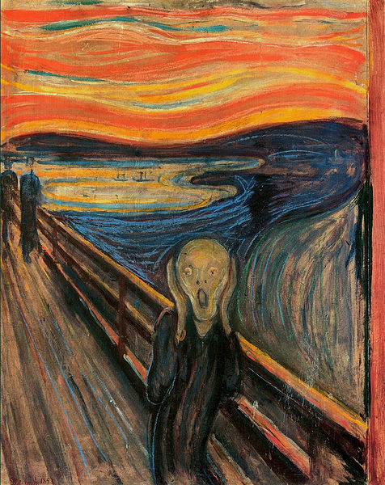

1.Mona Lisa , Leonardo Da Vinci
"The enigmatic smile of Mona Lisa has captured the imagination of the world. The Mona Lisa gives a glimpse of immortality in an anonymous lady. Leonardo Da Vinci spent a lifetime on this painting; he carried it around for many years, always working and perfecting it.there is something in the painting that transcends the ordinary human consciousness,there is beauty and simplicity, but also the unknowing smile of the Beyond."

2.The Last Supper
"The Last Supper is a late 15th-century mural painting by Leonardo da Vinci in the refectory of the Convent of Santa Maria delle Grazie, Milan. It is one of the world's most famous paintings,and one of the most studied, scrutinized, and satirized."

3.The Scream
"The Scream is the popular name given to each of four versions of a composition, created as both paintings and pastels, by the Expressionist artist Edvard Munch between 1893 and 1910."

4.PORTRAIT OF ADELE BLOCH-BAUER I
"Portrait of Adele Bloch-Bauer I is a 1907 painting by Gustav Klimt. The first of two portraits Klimt painted of Bloch-Bauer, it has been referred to as the final and most fully representative work of his golden phase."

5.GIRL WITH A PEARL EARRING
"Girl with a Pearl Earring is an oil painting by 17th-century Dutch painter Johannes Vermeer. It is a tronie of a girl with a headscarf and a pearl earring. The painting has been in the collection of the Mauritshuis in The Hague since 1902."

6.Inspiration of St Matthew , Caravaggio
"Caravaggio was commissioned to provide three paintings for the Contarelli Chapel in the church of San Luigi Dei Francesi. This 'Inspiration of Matthew' is one of the three paintings. The other two being the martyrdom of St Matthew and the calling of St Matthew."

7.Pieta, Michelangelo
"Michelangelo's Pieta , The magnificent depiction of Mother Mary holding her crucified son, Jesus Christ. Beauty, elegance , restrained yet intense emotion. It is a poignant, beautiful and awe inspiring. It is both symbolic of divinity's sacrifice for humanity, and also the epitome of a mother's love for her beloved son."

8.Sistine Chapel by Michelangelo
"Michelangelo's four-year epic. Unsurpassed in scale and greatness that leaves visitors breathless. The Pope who commissioned Michelangelo hoped that he would choose scenes from the New Testament, but Michelangelo chose scenes from the Old Testament. Here God is creating Adam, capturing that elusive touch between man and God."